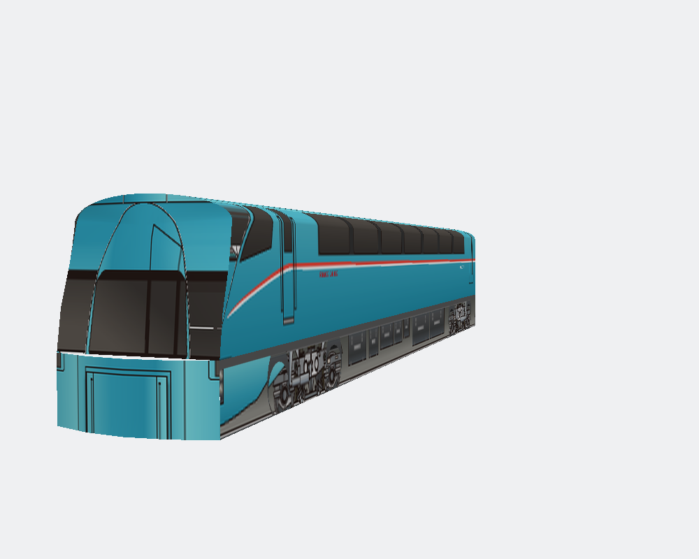
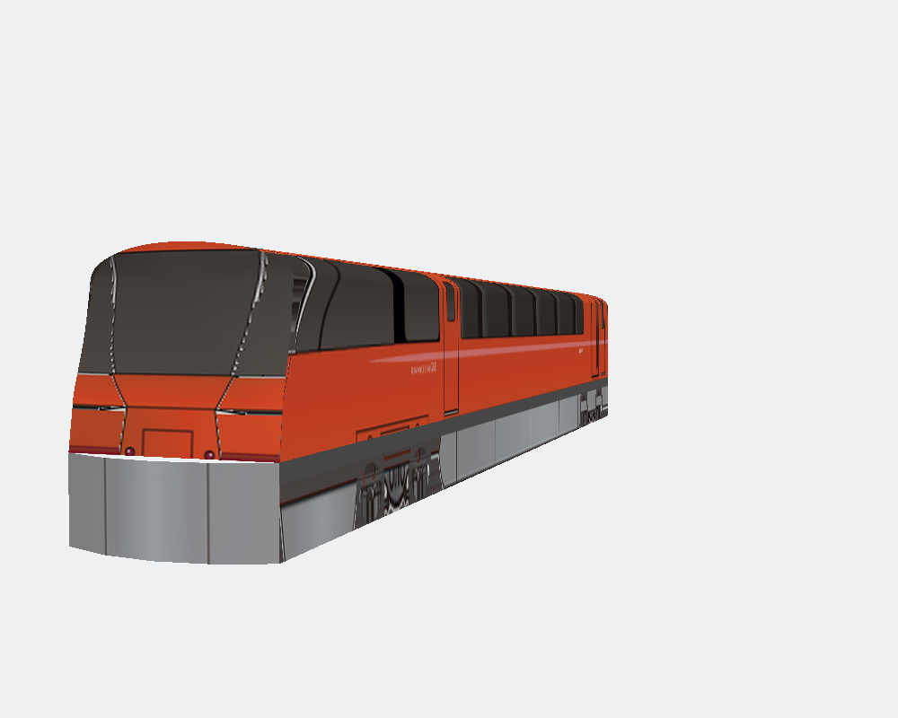
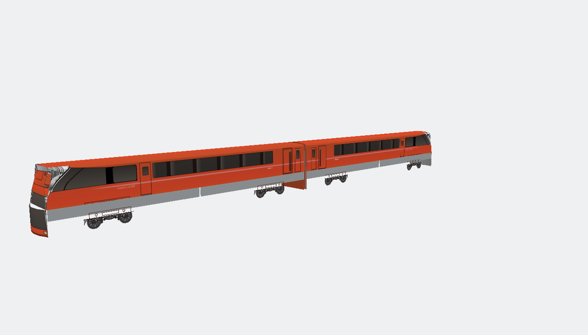
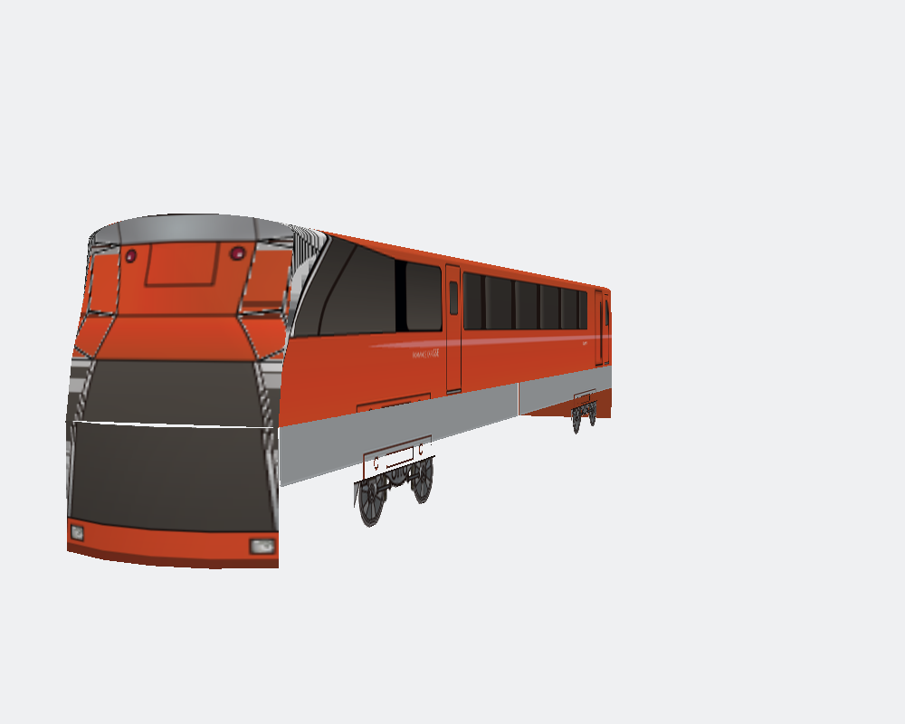

MC 快速审核第二批返工·第二轮 — 3 辆（2026-11-27）
MC 2026-11-27 14:31 微信点名两辆（#391、#404，第一轮返工已推、他看了仍不满意）；另 #392 odakyu-70000 与 #404 同一辆实车 GSE（异名重复 slug）、同病更重，按 MC 14:34 授权同法重建，共三辆。第二批返工页：mc-review-rework2-20261127（三辆的卡片已同步更新为第二轮修法与修后图）；快速审核页：quick-review-20261127。每辆一卡：号码、MC 原话、根因、修法、commit SHA、第一轮修后 vs 第二轮修后对比图（斜视角＋鼻锥特写）。模型在 ooep/floral-salad-8734 的 models-pipeline 分支，index 663。
#391 odakyu-60000 —— 小田急60000形 MSE
MC 原话：（14:31）“这个还是不行，重新做。”
根因：第一轮 OT-1 的 GLB warp（R=0.55）不够：原版前盖是以扇心 (0, 3.113) 为顶点的 29 三角平面扇形，位置 warp 只能移动已有顶点，扇心与外框拉回量不同 → 扇形顶成带硬折的帐篷，拱形折线就是扇形边，加大 R 永远修不好；且前脸/裙板贴图就是纸模端件 1:1，折叠拱线、白粘贴耳、中央矩形门原样进了 front 与 skirt_cab1 两张贴图，warp 动不了图上的线；侧面贴图鼻端还带纸模折叠引导线（对角斜线、左上白三角、顶部深色包边），司机侧窗画成尖底三角形。
修法：第二轮从原版 GLB 重做（OT-1 的 warp GLB 已弃用）：25 列×15 断面层分级网格新前盖（625 tris）取代扇形，边界顶点取车体前缘环满精度值，前盖平面取前缘环 z；平滑 warp（C1）：车顶后移 0.50 m、裙底 0.30 m、最前点 y≈1.90，平面圆收 0.18 m，D=1.5 m 融合；贴图按实车重画（front 双片风挡 y 1.60..2.80、外上圆角 r=0.30 m、中柱、雨刮、左片 LED 行显、发丝门缝；skirt_cab 车钩凹口＋前灯白＋红＋门缝延续；sideL/R 鼻端楔形区涂蓝、司机侧窗重画为四边形、红带按实测逐列中心线原像素恢复）；under/skirt alphaMode 恢复 MASK/0.5。
推送：提交 f307c96f（models-pipeline，一车一 commit）
完整 SHA：f307c96f07f7d3d24bcc6d017af282d788dcd323；父提交 47426c87，一次成功



#392 odakyu-70000 —— 小田急70000形 GSE
MC 原话：（#392 由 MC 14:34 授权追加）MC 14:31 点名的是同车 #404；#392 是同一辆 GSE 的异名重复 slug，核查发现同病更重（front 贴图上下颠倒），按 MC 14:34“其他的，你根据实际情况做决断”授权同法删后重建。
根因：与 #404 同一辆小田急70000形 GSE（异名重复 slug），front 贴图是同一张鼻锥件但上下颠倒（逐像素比对：翻转后平均绝对差 20.9、不翻转 57.6），同样有空矩形框＋2 红圆点“控制面板”＋空白显示器状风挡＋下方大块灰平板；另是更老的纸模建法（car_length_m 20.8 m、车高 3.7 m、alphaMode 全丢）。第一轮 OT-1 只做了楔形 warp R=0.55，没修贴图问题。
修法：第二轮删后重建（与 #404 同法）：删前核实线上确为纸模（11,846 tris，无高精度版）；删 commit 8f76cc1a（index 663→662）；再从同一张图纸从头重建：loft 鼻锥（不用 warp）、前脸按实车照片重画（整块连续全景玻璃到 y=1.15 m、无电脑面板、无横线）、后倾前裙板、鼻锥下部封闭；车长 20.8→21.3 m、车高 3.7→4.057 m 按实车纠正；consist 改用现行写法（file 键、[21.3, 21.3]、gap 0.3，与 #404 相同）；under/skirt alphaMode 恢复 MASK/0.5。重建 commit 2de32a62（index 662→663）。两份模型现几何/纹理逐像素相同，仅内嵌模型名不同；异名重复 slug 是否合并留待 MC 定夺，本轮不动。
推送：删 8f76cc1a＋建 2de32a62（models-pipeline，各单 commit）
完整 SHA：删 8f76cc1a71846ec7775596cf25ab2ed0c2a8a715；建 2de32a6232ed57f4735057ed1860bb0a50a58c19




#404 osakyu-70000 —— 小田急70000形 GSE
MC 原话：（14:31）“这个司机是贴图上下都是电脑的，而且他现在头型也不对。删掉，重新做。”
根因：第一轮 OT-1 只修了编组（car2 重建为 Tc）＋尖头 warp R=0.55，但前脸仍错：“电脑”不是颠倒、不是取错件——纸模鼻锥件是折叠展开图不是立面图，拍平到平板端盖上，红色司机室面板成空矩形框＋2 红圆点（读作控制面板/屏幕）、全景风挡成无反光无座椅无立柱的深色梯形（读作空白显示器）、折叠线＋端盖/裙板接缝把风挡切成上下两段、warp 又加一道折痕；头型也不对：平板＋warp 折角楔形 vs 实车光滑连续曲面。
修法：第二轮删后重建：删前核实线上确为纸模（OT-1 产物，11,846 tris，无高精度版）；删 commit 73b796d0（index 663→662）；再从同一张图纸从头重建：loft 鼻锥（不用 warp；前脸 UV 高度式 v=(Y_TOP−y)/Y_TOP），底边从 1.59 m 下探到 1.15 m（配套封闭下部＋后倾前裙板），前脸按实车照片重画正视立面（波尔多红车顶、司机窗 y 3.20–3.90、素红带无目的地显示、整块连续全景玻璃 y 1.15–2.95、下红鼻带 y 0.60–1.15、银裙 y 0–0.60）；under/skirt alphaMode 恢复 MASK/0.5；consist [21.3, 21.3] 不变。重建 commit ccb413d8（index 662→663）。
推送：删 73b796d0＋建 ccb413d8（models-pipeline，各单 commit）
完整 SHA：删 73b796d02bf86e4ef725656a01ae4c14a2e1d105；建 ccb413d8909c6f05ff9e3e6f9027561ac0b6bb93




说明：修前图为第一轮 OT-1 渲染；修后图为第二轮 R2 渲染。工作目录：~/workspace/jr3d/work/mc-review-rework2-round2-20261127/（DISPATCH.md＋r2-60000/REPORT.md、r2-70000/REPORT.md、r2-70000-392/REPORT.md）；建页脚本：rework-page/build_page.py。建模 skill 已升到 v1.2.40（#404 的 7 条见 1.2.38、#391 的 6 条见 1.2.39、#392 的 5 条见 1.2.40）。